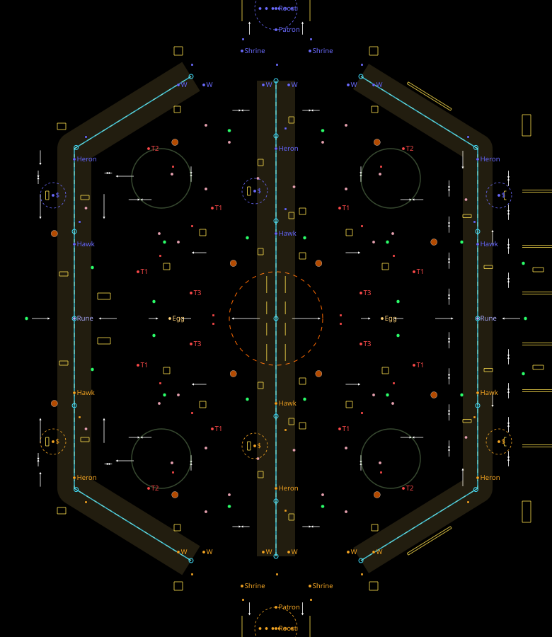
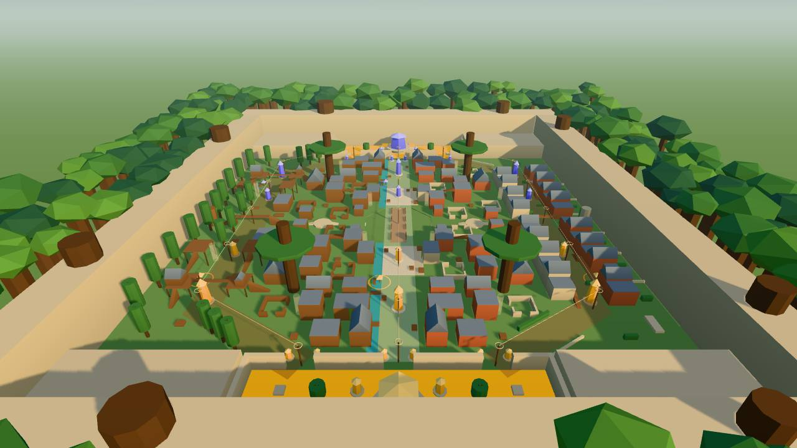
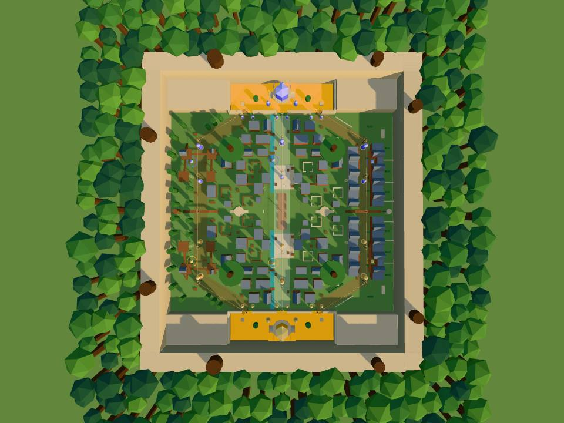
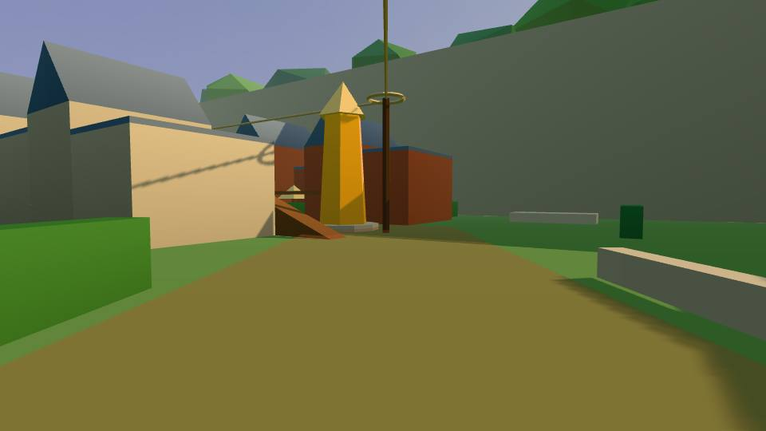
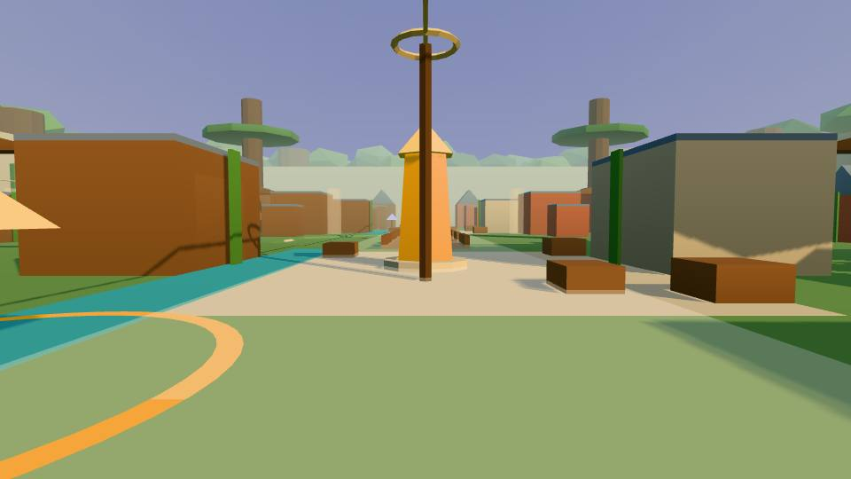
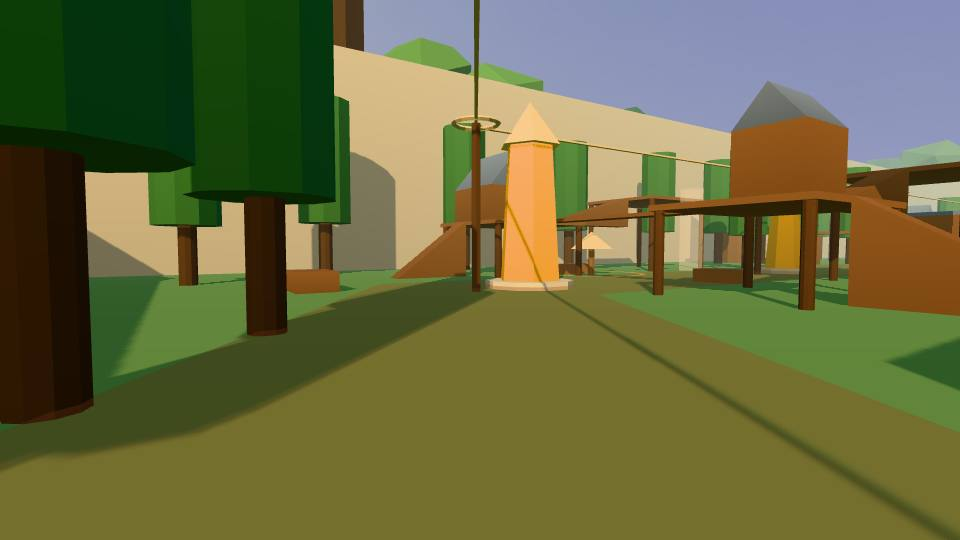

Old Mossmarket
PERCH has one map, Old Mossmarket: a storybook market town swallowed by an ancient forest. Giant trunks rise through the streets into a canopy, roofs are mossy, and lanterns hang in the alleys. The map is symmetric: the Dawn Flock starts in the south base and the Dusk Flock in the north, and the layout of one half mirrors the other.

Overview


The three lanes
Fledgling waves march along three authored lanes between the bases. Each has its own character.
| Lane | Width | Length | Updraft stations |
|---|---|---|---|
| Hedgerow (west) | 14 m | 289 m | 7 |
| Riverbank (middle) | 18 m | 224 m | 7 |
| Pinewood (east) | 16 m | 289 m | 7 |
- Hedgerow (west): walled kitchen gardens, clipped hedges and stone terraces of narrow houses with balconies over the lane. Sightlines are short and hedges make good cover.
- Riverbank (middle): a slow river beside the lane, boardwalks, water mills and the Old Mill Bridge over the Hollow. Sightlines are long and cover is scarce.
- Pinewood (east): tall pines, timber houses on stilts and rope walkways. The best high ground on the map.



Bases
Each base is a walled square. Inside are three gates, the Nest Wardens just outside them, the two Roost Shrines, the Patron on its dais and the Home Roost behind it. See Patrons. An Updraft station at each gate starts that lane's Updraft.
Traversal features
- Updrafts are wind currents strung above each lane from base to base, with stations at the gates, near the towers and in the centre. See Movement.
- Chimneys lift you to rooftops, Vines let you climb walls and trees, and ledges let you mantle.
- Shops: the Home Roost and a Magpie stall on each lane, for your own flock. See The Magpie's Hoard.
- The Jungle: the blocks and woods between lanes. Neutral camps, Nests and Feather runes will live here: see Planned objectives.
| Feature | Count |
|---|---|
| Hero spawns per flock | 6 |
| Structures (both flocks) | 30 |
| Sentinel Hawks / Stilt Herons / Nest Wardens | 6 / 6 / 12 |
| Roost Shrines / Patrons | 4 / 2 |
| Updraft lines | 3 |
| Chimneys | 12 |
| Vines | 24 |
| Mantle ledges | 230 |
| Shops (Home Roosts and Magpie stalls) | 8 |
| Thicket camps (planned) | 16 |
| Nests (planned) | 32 |
| Feather rune spots (planned) | 2 |
| Egg Perches (planned) | 2 |
| Bounds | 260 m × 300 m |